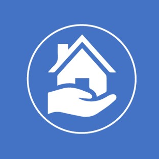

<div class="example-container" [class.example-is-mobile]="mobileQuery.matches">
  <mat-toolbar style="color: #827ffe;" class="example-toolbar">
    <button mat-icon-button (click)="snav.toggle()" *ngIf="visible">
      <mat-icon>menu</mat-icon>
    </button>
    <a class="navbar-brand ml-3">
      
    </a>
    <h1 class="example-app-name">Servicio Justo</h1>
  </mat-toolbar>

  <mat-sidenav-container class="example-sidenav-container" [style.marginTop.px]="mobileQuery.matches ? 56 : 0">
    <mat-sidenav #snav [mode]="mobileQuery.matches ? 'over' : 'side'" [fixedInViewport]="mobileQuery.matches"
      fixedTopGap="56">
      <mat-nav-list>
        <a mat-list-item [routerLink]="nav.route" *ngFor="let nav of navegacion">{{nav.name}}</a>
        <a mat-list-item href="/login" (click)="cerrarSesion()">
          <mat-icon>subdirectory_arrow_left</mat-icon> Cerrar sesión
        </a>
      </mat-nav-list>
    </mat-sidenav>

    <mat-sidenav-content>
      
      <router-outlet></router-outlet>
      
    </mat-sidenav-content>
  </mat-sidenav-container>
</div>